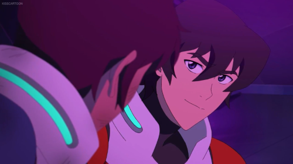
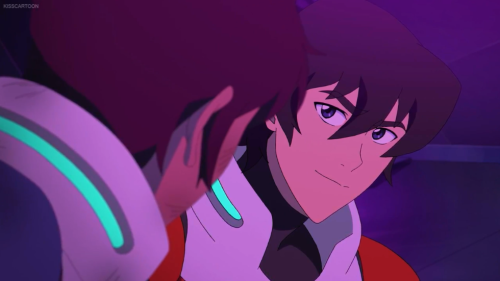
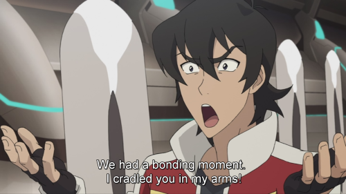
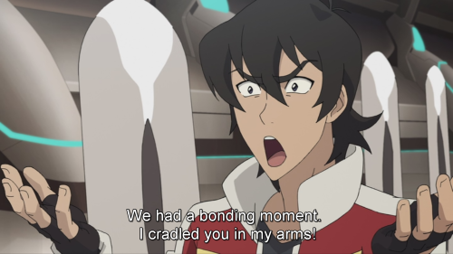
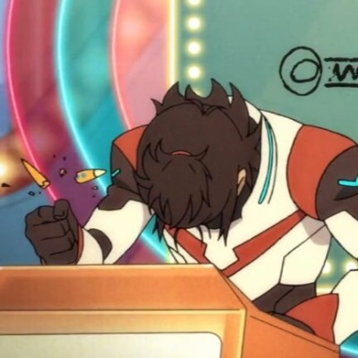

Klance (Keith and Lance from Voltron: Legendary Defender (VLD for short)) rewrote my brain chemistry and probably contributed to me realising I'm trans that's how impactful they are. They pretty much kickstarted my fanfiction reading when I was 13-14 and then I just never stopped reading klance fics. They took over a solid 4-5 years of my life and I still wouldn't say that I'm totally over them. You start watching voltron cause you heard some people talking about it, you start to ship klance, and suddenly its 3am on a school night and you're 100k into whatever wittyy_name fic you were reading at the time. It's a black hole of a ship and I loved every second (my family did not love my voltron obsession unfortunately for them). I love them. I hate them. I miss them.
They have the typical rivals-to-friends(-to-lovers) dynamic. At the start of the show, when we first see them meet, Lance views Keith as someone to be better than and Keith just does not care about Lance (they have history apparently but Keith forgot :( (they went to pilot school (The Garrison) together but Keith got kicked out)). However once they're in space we truly get the rival dynamic of a lifetime. They don't outright hate each other but they sure as hell don't like each other. Keith doesn't take Lance seriously and Lance thinks Keith is a loser dropout moron. BUT AS TIME GOES ON THINGS CHANGE. Being forced to be on a team together (literally get along or the universe will be doomed), being in forced proximity, their relationship changes to a more playful one. They can poke fun at each other, crack jokes, have an actual friendship, etc. We get to see them continue their friendship all the way through the whole show and by the end they're besties (see: boyfriends). That's the canon dynamic but let's get into the actual canon dynamic: the boyfriends, holy shit how are they not dating dynamic.
They compliment each other so well. They are the definition of opposites attract. They started the red/blue soulmates trend. Keith is impulsive and rushes into things while Lance is more level headed and thinks things through. They balance each other out so fucking well and I'm upset we didn't get more, if any, scenes of them fighting together. They reassure each other. Skip to any scene from seasons 6-8 where they're talking one-on-one and it's going to be them being the most healthy, communicative, duo in the whole show (I WILL GET INTO THIS). They turned a petty rivalry into healthy competition and it's so fucking nice to watch play out trust me. If you haven't seen the show but love rivals-to-friends, trust me, you'll love their dynamic.
If I were to go through the entire show and point out everytime they're obviously gay for each other, this page would go on forever so I will be going through the most Iconic Moments TM. If you want more go read the Klible (my god we were delusional).
I'd recognise that mullet anywhere | Season 1 Episode 1
You're going to look me in the face and tell that Lance can recongise Keith from his fucking haircut and tell me that
he's not totally obsessed with him??
The Bonding Moment | Season 1 Episode 5
The Bonding Moment TM changed lives. And that is an understatement.
After a battle where Lance got pretty injured (and looked hot doing it), Keith goes to help him get up. Instead of
the usual "let me help you up man *offers hand*" "thanks bro *gets pulled up*" Keith put his hand out, Lance took it,
and then Keith just kneeled besde Lance so they could stare into each others eyes??? You cannot make this shit up. No
straight person is gazing fondly at their rival in purple lighting (mix of their colours red and blue), and smiling
softly at each other for an extended period of time. Off-screen Lance supposedly gets fucking cradled??? by Keith in
his arms and carried off to safety (i am suing the writers for not showing this). There is no heterosexual explanation
for this shit.
 

We had a bonding moment. I cradled you in my arms!Thank you, Keith. This momemnt truly made you my favourite character.
 

when lance is tied up and keiths flirting | Season 1 Episode 6
ELEVATOR
*lance making fun of keith* HE WAS THEIR GREATEST WARRIOR
LANCE COMFORTING KEITH ABOUT FLYING THE BLACK LION EVERYONE LOOKED AT HIM | Season 3 Episode 1
heh are you joking | Season 3 Episode 2
same episode had the hand on shoulder gay gasp
leave the math to pidge | Season 3 Episode 6
Keith Gets Hot (According to Lance) | Season 6 Episode 4
Cutting to Season 6. Background Info: Keith ends up on a space whale with his alien mum (smash) for 2 years while it was only
a few months for everyone else due to time distortion from a vortex. When Keith was on his way back, he video called the castle
and everyone is suprised to see him cause "omg Keith its been like 4 months where you been?" meanwhile Lance is standing there
literally gobsmacked for 6 whole seconds (i counted) before saying "Does he look bigger to you guys" You cannot make this shit
up. Lance hasn't seen Keith in several months and the first thing he comments on is his appearance?? Okay Lance I see you. To
make matters worse when Keith lands, Lance goes to give him a hug but Keith is a man on a mission (understandble due to the
circumstances) and says "Not now, Lance". Lance is fucking distraught over this, he's standing there with his arms open while
pouting. He also says "How do we know youre not Keith's cooler, grizzled, older brother" [swap hug and grizzled lines like in show]

Game Show | Season 7 Episode 4
Voltron has like 3 or 4 episods where the characters just do stupid shit and they are the best episodes without question. One of those
episodes takes place during their roadtrip back to Earth where everyone has a collective dream that they're on a gameshow hosted by an
alien named Bob (stick me with here). At the end of the gameshow, everyone has to vote on the person they want to go free. Keith and Lance
vote for each other because of fucking course they do but they do so for very different reasons.
I'd like to shout out ponytail Keith from this episode real quick.

Lance votes for Keith because, and I quote, "I think he's like the future" (gay). Keith votes for Lance because "I just don't want to
spend an eternity with Lance" (which makes no sense btw cause they're friends now and it would've made way more sense for him to pick his
literal fucking brother)

Gay Sunsets | Season 8 Episode 1
listen, i hated this episode. the way the writers treated allura through this entire arc? horrible. hated it. /but/
the scene where keith is sitting on his lion, lance comes up to him to chat, and they hava a heart-to-heart literally made
my fucking year when i first watched it. allurance was end game at this point we all knew it but that moment, god fucking damn.
romance peaked. that 3 minute scene alone had more romantic tension than anything allura and lance had through 8 seasons.
honourable mention to veronica asking lance if keith was single and lance being against it... why do you care if you dont
have feelings for him? i know what you are

joining hands

fic recs:
Nightmares by Trashness